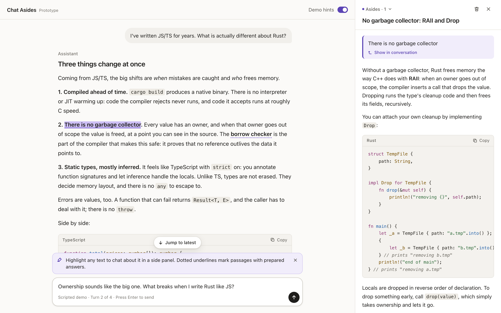

Chat asides
A UI demo of a streaming chat app with asides: highlight part of a reply to ask about it in a side panel.

In a chat with an assistant, a question about one passage of a reply takes over the conversation: the answer pushes the thread you were following out of view.
Asides keep that question to the side. Highlight any passage in a reply, choose Chat about this selection, and a side panel opens with an explanation anchored to the highlight. The passage stays marked, so clicking it later reopens the aside, and each aside suggests follow-up questions of its own.
The demo
The demo plays a scripted conversation, Rust explained to a JavaScript developer, and streams each reply token by token. Passages with a prepared aside have a dotted underline. Any other selection gets a general answer that quotes it.
Stack
React, TypeScript, Vite, and Tailwind CSS. There's no model and no backend: a stream simulator plays the scripted replies with a jittered delay, so the demo runs as static files.